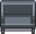
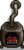
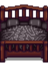
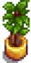
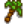
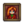
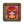

Möbel
| Geringer Artikelumfang
Geringer Artikelumfang Dieser Artikel ist aus folgendem Grund als unvollständig gekennzeichnet:
|
- Für Tapeten, siehe Tapeten.
- Für Bodenbeläge, siehe Bodenbeläge.
- Für hergestellte dekorative Dinge, siehe Herstellung.
Möbel können bei Robin am Schreinerladen oder vom Reisewagenhändler gekauft werden. Beide Läden ändern täglich ihr Sortiment an Möbeln. Die Preise im Reisewagen sind zufällig, aber immer zwischen  250–2.500 G. Die Preise im Schreinerladen ändern sich nicht.
250–2.500 G. Die Preise im Schreinerladen ändern sich nicht.
Manche Möbel kann man nur bekommen, indem man Items an das Museum spendet, oder sie bei Festivals, im Kasino oder vom Joja-Markt kauft. Die Ausnahmen sind unten in einer Liste aufgeführt.
Nach dem ersten Bauernhausupgrade, verkauft Robin einen Möbelkatalog im Schreinerladen. Sobald man ihn plaziert und verwendet, kann man Möbel in unendlicher Anzahl kaufen.
Möbel zeigen mithilfe von grünen Rechtecken an, wo sie plaziert werden können. Wenn man sie an einer Stelle nicht plazieren kann, wird die Fläche rot angezeigt. Wenn man ein Möbelstück rechtsklickt, während man es ausgewählt hat, kann man es rotieren. Manche Möbel werden plaziert wenn man sie rechtsklickt und dabei ausgewählt hat. Manche Möbel kann man einfach aufheben und mit einem Linksklick verschieben. Andere Möbel wiederum benötigen ein Werkzeug, damit man sie wieder abbauen kann. Mit der Version 1.2 wurde die Notwendigkeit eines Werkzeugs zum Verrücken bei manchen Möbeln rückgängig gemacht.
Möbel können nicht mithile der Versandkiste oder an Händler/Shops in Stardew Valley verkauft werden.
Steuerung
- Computer:
 Rechtsklick auf ein ausgewähltes Möbelstück, um es zu drehen oder zu platzieren. Einige Möbel können einfach durch
Rechtsklick auf ein ausgewähltes Möbelstück, um es zu drehen oder zu platzieren. Einige Möbel können einfach durch  Linksklick aufgenommen und verschoben werden; Für andere Möbel muss der Spieler ein Werkzeug verwenden oder die linke Maustaste gedrückt halten, um es zu entfernen, sobald es platziert ist.
Linksklick aufgenommen und verschoben werden; Für andere Möbel muss der Spieler ein Werkzeug verwenden oder die linke Maustaste gedrückt halten, um es zu entfernen, sobald es platziert ist. - Nintendo Switch: Verwende den
 A Knopf, um Möbel zu drehen.
A Knopf, um Möbel zu drehen. - Xbox: Drücke X oder A, um ohne Platzierungshilfe schnell zu platzieren, und X, um es zu entfernen – es wird nicht platziert, wenn nicht genügend Platz vorhanden ist. Um einen Gegenstand zu entfernen, stelle dich davor und klicken Sie auf X (einige Gegenstände erfordern zum Entfernen die Verwendung eines Werkzeugs). Für mehr Kontrolle verwende den rechten Schalter, um das Möbelstück im Raum zu bewegen, und drücke zum Platzieren/Entfernen X. Dadurch wird ein verblasstes Bild des Möbelstückes und die Platzierungshilfe angezeigt, diese zeigt, wo das Möbelstück platziert werden kann und wo nicht. Einige Gegenstände können vor dem Platzieren mit A gedreht werden.
Stühle
Der Kristallstuhl kann nicht gekauft werden; man kann ihn nur bekommen, indem man 41 Mineralien an das Museum spendet. Der Tropische Stuhl ist nur beim Inselhändler für 1 Rotfeuerfisch erhältlich.
Alle anderen Stühle können im Reisewagen für  250–2.500 G oder vom Möbelkatalog für
250–2.500 G oder vom Möbelkatalog für  0 G gekauft werden.
0 G gekauft werden.
Stühle können draußen platziert werden.
|
|
|
Bänke
Alle Bänke können im Reisewagen für  250–2.500 G oder vom Möbelkatalog für
250–2.500 G oder vom Möbelkatalog für  0 G gekauft werden.
0 G gekauft werden.
Bänke können draußen platziert werden.
| Bezeichnung | |
|---|---|
|  Moderne Bank |
Sofas & Sessel
Alle Sofas können im Möbelkatalog für  0 G gekauft werden. Die meisten können vom Reisewagen für
0 G gekauft werden. Die meisten können vom Reisewagen für  250–2.500 G gekauft werden, mit der Ausnahme der
250–2.500 G gekauft werden, mit der Ausnahme der  Große braune Couch. Sie kann sonntags in der Oase für
Große braune Couch. Sie kann sonntags in der Oase für  3.000 G gekauft werden.
3.000 G gekauft werden.
Sofas und Sessel können nicht draußen platziert werden.
|
|
Tische
Alle Tische können im Reisewagen für  250–2.500 G oder vom Möbelkatalog für
250–2.500 G oder vom Möbelkatalog für  0 G gekauft werden. Den Winter-Beistelltisch gibt es auch beim Fest des Eises für
0 G gekauft werden. Den Winter-Beistelltisch gibt es auch beim Fest des Eises für  1.000 G.
1.000 G.
Tische können genutzt werden, um Gegenstände zu präsentieren. Während ein Gegenstand gehalten wird, rechtsklicke auf den Tisch, um ihn anzuzeigen. Bei großen Tischen muss diese Aktion in der Mitte des Tisches geschehen, da sonst der Tisch aufgenommen wird.
Tische können draußen platziert werden.
|
|
|
Esstische
Alle Esstische können im Reisewagen für  250–2.500 G oder vom Möbelkatalog für
250–2.500 G oder vom Möbelkatalog für  0 G gekauft werden.
0 G gekauft werden.
Der Winter-Esstisch kann beim Fest des Eises und der Festlicher Esstisch beim Fest des Wintersterns gekauft werden.
Esstische können draußen platziert werden.
| Bezeichnung | Andere Preise | |
|---|---|---|
| N/A | ||
| N/A | ||
Bücherregale & Kommoden
Alle Bücherregale und Kommoden, die unten aufgeführt sind, können im Reisewagen für  250–2.500 G gekauft werden, oder aus dem Möbelkatalog für
250–2.500 G gekauft werden, oder aus dem Möbelkatalog für  0 G.
0 G.
Kommoden können genutzt werden, um Kleidung, Hüte, Schuhe und Ringe zu lagern.
Bücherregale und Kommoden können nicht draußen platziert werden.
|
|
Kamine
Kamine werden niemals am Reisewagen verkauft.
Sobald platziert, rechtsklicke auf den Kamin, um das Feuer ein- oder auszuschalten.
Kamine können nicht draußen platziert werden.
| Bezeichnung | Andere | |
|---|---|---|
| Möbelkatalog | ||
| N/A |
| |
| N/A | Nachtmarkt für | |
| N/A | ||
| Möbelkatalog | ||
|  Ofenkamin | Insel-Farmhaus |
Teppiche
Nur Dunkler Vorleger, Ozeanischer Teppich, Patchwork-Vorleger, und Roter Vorleger werden im Reisewagen verkauft. Der Preis von jedem ist zwischen  250–2.500 G.
250–2.500 G.
Der Moderne Teppich kann beim Tanz der Mondlichtquallen, der Funky Teppich bei der Geisternacht, der Eisteppich beim Fest des Eises, der Große rote Teppich beim Fest des Wintersterns und der Hellgrüne Teppich beim Sterntautaler Volksfest gekauft werden. Alle genannten Teppiche sind auch im Möbelkatalog erhältlich.
Grüner Hüttenvorleger, Monster-Teppich, Mystischer Vorleger, Roter Hüttenvorleger, Knochenteppich, Blütenteppich und Schnee Teppich sind nur im Möbelkatalog erhältlich.
Der Obstsalat Teppich und der Piratenteppich sind nur durch Pennys 14-Herz Event erhältlich.
Bodentrenner sind nur im Möbelkatalog verfügbar.
Teppiche können nicht draußen platziert werden.
|
|


Lampen & Fenster
Fenster werden nicht im Reisewagen angeboten. Die Kerzenlampe und die Verzierte Lampe werden auch nicht im Reisewagen angeboten. Alle anderen Lichter können im Reisewagen für  250–2.500 G gekauft werden.
250–2.500 G gekauft werden.
Das Verzierte Fenster kann beim Fest des Wintersterns gekauft werden.
Alle anderen Gegenstände können im Möbelkatalog für  0 G gekauft werden.
0 G gekauft werden.
Lampen und Fenster können nicht draußen platziert werden.
|
|
TVs
Alle Fernseher außer des Tropisches TV können im Möbelkatalog für  0 G gekauft werden. Fernseher werden nicht im Reisewagen angeboten.
0 G gekauft werden. Fernseher werden nicht im Reisewagen angeboten.
Der Billig-Fernseher ist bereits im Standard-Bauernhaus und dem Ecken-Hof vorhanden. Der Fernseher ist in allen anderen Bauernhäusern vorhanden.
TVs können nicht draußen platziert werden.
| Bezeichnung | ||
|---|---|---|
| N/A | ||
| N/A | ||
| N/A | ||
| N/A |
Betten
Es gibt zwei Arten von Betten; Kinderbetten und Erwachsenenbetten. Spieler können nur in Betten für Erwachsene schlafen.
Derzeit gibt es nur ein Kinderbett.
Betten können nicht draußen platziert werden und können nur im bewohnbaren Raum platziert werden. (d.h. nicht im Schuppen).
| Bezeichnung | Herkunft | Preis |
|---|---|---|
Erst nach Komplettierung von Robins Projekt |
||
|  Exotisches Doppelbett | ||
| N/A | ||
| N/A | ||
| N/A | ||
Pflanzendekorationen
Hauspflanzen
Jede der 15 Hauspflanzen kann vom Schreinerladen für  250 G oder vom Reisewagen für
250 G oder vom Reisewagen für  250–2.500 G oder vom Möbelkatalog für
250–2.500 G oder vom Möbelkatalog für  0 G gekauft werden.
0 G gekauft werden.
Hauspflanzen können draußen platziert werden.
| Hauspflanzen | ||||||||||||||
|---|---|---|---|---|---|---|---|---|---|---|---|---|---|---|
|  | ||||||||||||||
Freistehende Pflanzendekorationen
Getrocknete Sonnenblumen können nur beim Sterntautaler Volksfest gekauft werden. Der Deluxe Baum, Exotische Baum, Lange Kaktus und die Lange Palme können nur vom Kran-Spiel im Kino erhalten werden. Alle anderen aufgelisteten Gegenstände sind im Möbelkatalog für  0 G erhältlich.
0 G erhältlich.
Freistehende Pflanzendekorationen können draußen platziert werden.
|
|
Dekorative Hängepflanzen
Der Indoor Hängekorb kann nur beim Kran-Spiel im Kino erhalten werden. Das Palmwand Ornament kann nur beim Inselhändler für 1 Ananas erhalten werden. Der Wand-Pflanzenkorb kann nur im Teich in den Geheimen Wäldern gefischt werden.
Alle anderen aufgelisteten Gegenstände sind im Möbelkatalog für  0 G erhältlich.
0 G erhältlich.
Hängepflanzen können nicht draußen platziert werden.
| Bezeichnung | Herkunft | Preis |
|---|---|---|
| Schreinerladen | ||
| Luau | ||
| Luau | ||
| Kran-Spiel im Kino | ||
| Schreinerladen | ||
|  Palmwand Ornament | Inselhändler | |
| Blumentanz | ||
| Fischen im Teich im Geheime Wälder | ||
| Oase | ||
| Blumentanz | ||
| Luau |
Saisonpflanzen
Alle sechs Saisonspflanzen können vom Dekorationsboot auf dem Nachtmarkt für jeweils  500 G gekauft werden. Saisonpflanzen stehen niemals beim Reisewagen oder durch den Möbelkatalog zur Verfügung. Einmal plaziert ändert sich das Aussehen mit der Jahreszeit.
500 G gekauft werden. Saisonpflanzen stehen niemals beim Reisewagen oder durch den Möbelkatalog zur Verfügung. Einmal plaziert ändert sich das Aussehen mit der Jahreszeit.
Saisonpflanzen können draußen platziert werden.
| Frühling Aussehen |
Sommer Aussehen |
Herbst Aussehen |
Winter Aussehen |
Auch verkauft durch | Preis |
|---|---|---|---|---|---|
| Pierre beim Eierfest | |||||
| Pierre beim Eierfest | |||||
| Pierre beim Blumentanz | |||||
| Sandy in der Oase | |||||
| Robin im Schreinerladen | |||||
| Pierre beim Blumentanz |
Gemälde
Acht Gemälde ("Eine Nacht auf den Eco-Hügeln", "Jade-Hügel", "Verbrannte Opfergabe", Mein erstes Gemälde, "Boot", Pflanzen Druck, "Physik 101" and "Landschaft") sind nicht im Möbelkatalog verfügbar. Alle anderen Gemälde, mit der Ausnahme der Nachtmarkt Gemälde, können für  0 G im Möbelkatalog gekauft werden.
0 G im Möbelkatalog gekauft werden.
"Eine Nacht auf den Eco-Hügeln" und "Jade-Hügel" können nur als Belohnung für Spenden an das Museum erhalten werden. "Verbrannte Opfergabe" kann als Belohnung für Spenden an das Museum erhalten werden oder vom Kasino für  Qi coins gekauft werden. Mein erstes Gemälde kann nur während Leahs 14-Herz Event erhalten werden.
Qi coins gekauft werden. Mein erstes Gemälde kann nur während Leahs 14-Herz Event erhalten werden.
"Boot" kann an der südwestlichsten Stelle des Hofs gefischt werden, wenn der Strand-Hof gewählt wurde. Pflanzen Druck kann im Fluss auf der westlichen Seite der Insel Nord gefischt werden. "Physik 101" kann auf dem Gipfel des Vulkan-Dungeons gefischt werden. "Landschaft" kann im Teich außerhalb des Spas gefischt werden.
Gemälde können nicht draußen platziert werden.
|
|
Position der kleinen Gemälde
Manche kleineren Gemälde können höher oder tiefer als andere an der Wand hängen.

Nachtmarkt Gemälde
In den Nächten, wenn der Nachtmarkt geöffnet ist, bietet Berühmter Maler Lupini täglich ein Gemälde zum Verkauf an. Diese Bilder rotieren jeden Tag des Marktes für 3 Jahre und sind jeweils nur zu dem angegebenen Datum verfügbar.
| Bezeichnung | Tag | Jahre | Preis |
|---|---|---|---|
| 15. Winter | 1, 4, 7, etc. | ||
| 16. Winter | 1, 4, 7, etc. | ||
| 17. Winter | 1, 4, 7, etc. | ||
| 15. Winter | 2, 5, 8, etc. | ||
| 16. Winter | 2, 5, 8, etc. | ||
| 17. Winter | 2, 5, 8, etc. | ||
| 15. Winter | 3, 6, 9, etc. | ||
| 16. Winter | 3, 6, 9, etc. | ||
| 17. Winter | 3, 6, 9, etc. |
Porträts
Sobald ein Dorfbewohner dein Ehepartner wird, kann sein Porträt gekauft werden. Es wird jedes Mal angezeigt, wenn der Reisewagen dich besucht, vorausgesetzt, du hast 14 Herzen mit deinem Ehepartner. Im Gegensatz zu anderen verkauften Artikeln, die eine Preisspanne haben, haben diese Porträts einen festen Preis von  30.000 G.
30.000 G.
| Bezeichnung | |
|---|---|
|  Elliott Porträt | |
|  Penny Porträt | |
Film Poster
Film Poster können nur beim Kran-Spiel im Kino gewonnen werden. Jedes Postes erscheint zufällig beim Kran-Spiel während der entsprechende Film im Kino läuft.
Film Poster können nicht draußen platziert werden.
Banner
Das Wolkenbanner ist das einzige Banner, welches im Möbelkatalog verfügbar ist.
Banner können nicht draußen platziert werden.
| Bezeichnung | Herkunft | Preis |
|---|---|---|
| Wolkenbanner | Dekorationen Boot auf Nachtmarkt | |
| Fest des Eises | ||
| Tanz der Mondlichtquallen | ||
| Eierfest | ||
| Fest des Wintersterns |
Wandbehänge
Das J.-Cola Light-Schild wird am Joja-Markt statt im Schreinerladen verkauft.
Die folgenden Wandbehänge können nur beim Kran-Spiel im Kino erhalten werden: Kleiner Wand Kürbis, Wand Kürbis und Winter Baum Aufkleber.
Die folgenden Wandbehänge können nur bei Pennys 14-Herz Event erhalten werden: Nachthimmel Aufkleber #1, Nachthimmel Aufkleber #2, Nachthimmel Aufkleber #3, Piratenflagge und Erdbeer Aufkleber.
Der Rettungsring kann nur im Hinterzimmer von Willys Anglerbedarf gefischt werden. Der Pyramidenaufkleber kann nur im südlichen Teich der Calico-Wüste gefischt werden.
Wandbehänge können nicht draußen platziert werden.
|
|
Aquarien
Alle Aquarien außer das Wasserparadies können von Willy beim Anglerbedarf oder vom Möbelkatalog für  0 G erworben werden.
0 G erworben werden.
Das Deluxe-Aquarium ist eine Belohnung von Willy, nachdem der Tropische Fische Spezialauftrag komplettiert wurde. Danach ist es auch beim Anglerbedarf für  5.000 G und dem Möbelkatalog für
5.000 G und dem Möbelkatalog für  0 G erhältlich.
0 G erhältlich.
Das Wasserparadies kann nur im Geheimen Walnusszimmer von Mr. Qi für  20 Qi Edelsteine gekauft werden. Es ist nicht im Möbelkatalog erhältlich.
20 Qi Edelsteine gekauft werden. Es ist nicht im Möbelkatalog erhältlich.
Aquarien können nicht draußen platziert werden.
FackelnFackeln können draußen platziert werden.
SonstigesAlle unten aufgeführten sonstigen Gegenstände, mit der Ausnahme vom Dekorativen Mülleimer können vom Reisewagen für Alle sind im Möbelkatalog für Der Futan-Bär kann auch beim Kran-Spiel im Kino erhalten werden. Das Totempfahl kann auch für Alle unten aufgeführten Gegenstände mit der Ausnahme des Porzellanschranks und Industrierohrs können draußen platziert werden.
Andere DekorationenDie folgenden Gegenstände werden nie im Schreinerladen, dem Reisewagen oder dem Möbelkatalog verkauft. Die unten aufgeführten Gegenstände können draußen platziert werden.
BesonderesDie folgenden Gegenstände werden nie beim Reisewagen oder Möbelkatalog verkauft. Außer dem Einfacher Baumstamm und Baumstammstück werden keine der folgenden Gegenstände beim Schreinerladen verkauft. Die unten aufgeführten Gegenstände können draußen platziert werden.
Kataloge
Bauernhaus MöbelHier ist eine Liste mit Möbeln, die es gratis zu den einzelnen Bauernhäusern in jedem Hoftyp gibt. Alle unten aufgeführten Gegenstände sind auch je nach Auswahl der Hütte enthalten.
Geschichte
|
||||||||||||||||||||||||||||||||||||||||||||||||||||||||||||||||||||||||||||||||||||||||||||||||||||||||||||||||||||||||||||||||||||||||||||||||||||||||||||||||||||||||||||||||||||||||||||||||||||||||||||||||||||||||||||||||||||||||||||||||||||||||||||||||||||||||||||||||||||||||||||||||||||||||||||||